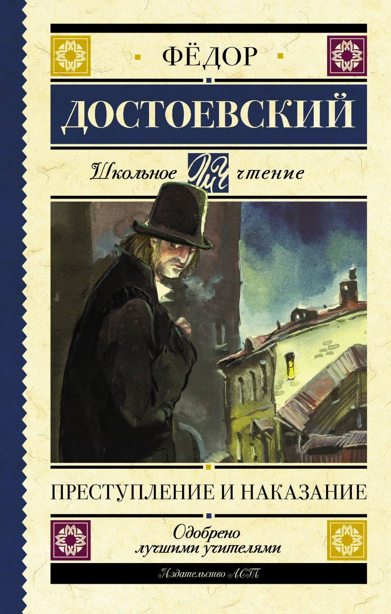

Преступление и наказание
Подробное содержание
Бывший студент Родион Раскольников живёт в крайней нищете в Петербурге. Под влиянием своей теории о «сверхчеловеке» он решается на убийство старухи-процентщицы, считая, что этим принесёт пользу обществу. Однако преступление оборачивается не только гибелью процентщицы, но и её невинной сестры Лизаветы. С этого момента начинается мучительное нравственное падение Раскольникова.
Раскольников пытается скрыть следы, но его терзает совесть. Он знакомится с Соней Мармеладовой, которая ради семьи вынуждена жить по «жёлтому билету». Именно она становится его нравственным ориентиром, читая ему притчу о воскресении Лазаря. Под её влиянием и под давлением следователя Порфирия Петровича Раскольников признаётся в преступлении и отправляется на каторгу в Сибирь.
В эпилоге Соня едет за ним. На каторге Раскольников постепенно осознаёт бесчеловечность своей теории и приходит к духовному перерождению. Любовь к Соне открывает ему путь к искуплению.
История создания
Замысел романа возник у Достоевского ещё в 1850‑е годы, когда он отбывал каторгу. Первоначально он планировал написать повесть «Пьяненькие», но постепенно в центр вышел образ убийцы-теоретика. Роман публиковался по частям в журнале «Русский вестник» в 1866 году. Достоевский работал в условиях крайней нужды, параллельно заканчивая «Игрока». Интересно, что Петербург в романе — не просто фон, а полноправный герой: душный, мрачный город, толкающий людей на безумства. Образ Раскольникова во многом навеян реальными преступлениями тех лет. Сегодня «Преступление и наказание» — ключевой текст русской литературы, изучаемый во всём мире.
← Вернуться к списку книг